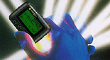
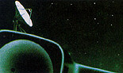
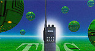
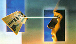
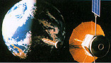
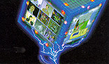

|
|  |
As an industry leader, Pantech has made technical breakthroughs time
and again to make the world's smallest pagers with versatile functions. Besides inventing
the frist Korean character pager, we became the first Korean manufacturer of Chinese
character pager, Thai character pager, English alpha-numeric pager, voice pager and
synthesizer pager. We will
take the lead again in introducing high-speed Flex pagers and reflex two-way pagers. |
|  |
PCS technology with CDMA is the newest method of personal portable
telecommunications.
Pantech, which has developed PHS, the Japanese-type PCS, for the first time in Korea,
is exporting its own technologies to Japan. From PCS, WLL and PDA, to GSM with CDMA,
Pantech Technology opens the way of portable telecommunication guaranteeing portability,
practicality and inexpensiveness, etc. Pntech is a company with an intensive technological
strategy. |

|  |
We at the Pantech take pride in our advanced technology proven by
being selected as "Korean standard in the simple mode TRS transceiver and other
products. Further, we have demonstrated high level of technology by exporting our
products to all over the world including China, Europe and the United States. |
|  |
We have been producing CCD camera, CCD camera module and color PC
camera since 1992. Pantech's ultramodern CCD products not only offers you convenience
of life but ensures security at home and at work. Convenience and security are two
great values. Pantech is trying to provide for the cyber generation in their new
paradise. |
|  |
A vivid and clear digital satellite broadcasting.
Digital Satellite Video Receiver guarantees you to enjoy spotless video images at
any place over the whole world. Now, history is made in satellite broadcasting by
Pantech's advanced technologies. |
|  |
Multimedia projects comprise, unified visible board, super highway
VGA card video conference, the visible compilation system and super highway for 33,600bps
etc. These will be made available for various businesses |
|
Ever since Pantech invested a substantial amount in Mirinae Software,
Pantech has introduced various types of game software in the fast developing Korean
market. In March 1995, Pantech embarked on the VAN service (Edutainment Park) project
designed to combine education with entertainment.
With introduction of this VAN service, we moved one step closer to creating the society
of total information and communication. |
|